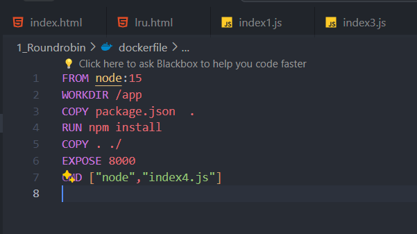
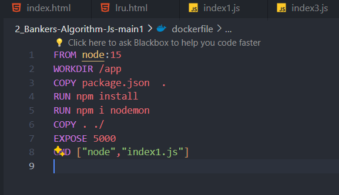
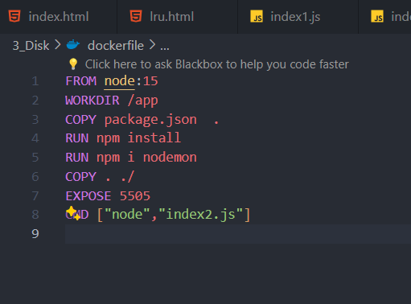
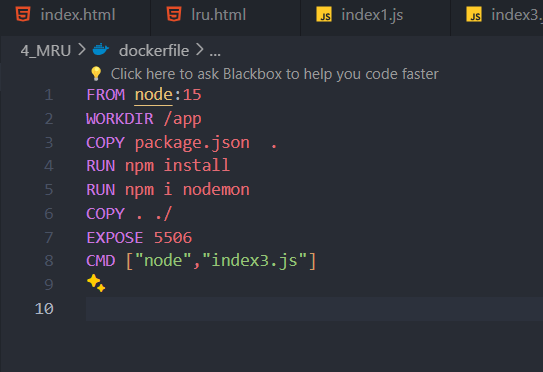
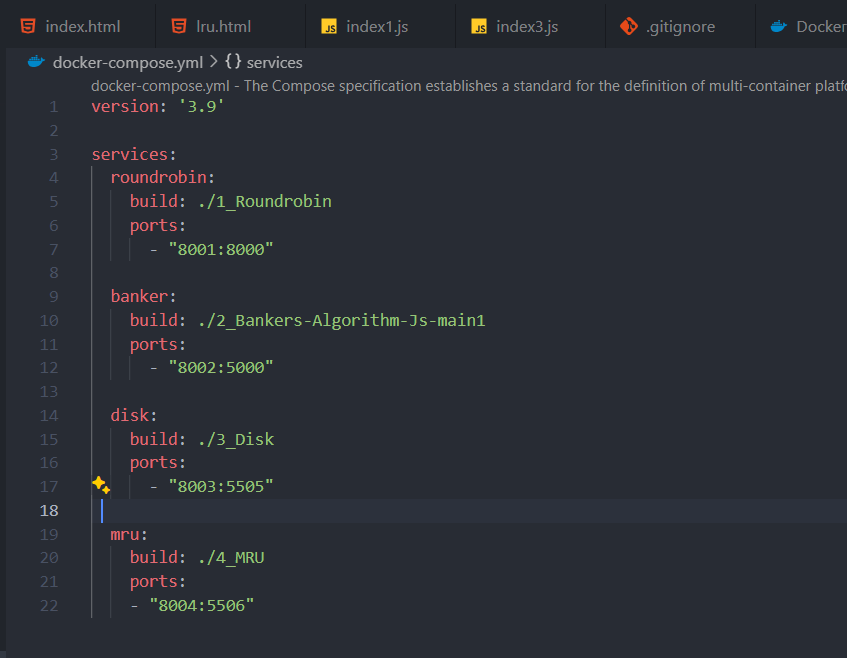

Introduction
Operating System (OS) algorithms play a crucial role in understanding the core concepts of computer science. In this tutorial, we'll walk through the process of building an interactive Operating System Algorithms Simulator called Core Algo using HTML, CSS, and JavaScript. This project will cover essential algorithms such as Round Robin, Banker's Algorithm, Disk Scheduling, and MRU (Most Recently Used), providing hands-on experience for learners of all levels.
Part 2: Designing the User Interface
Now that our project environment is set up, let's design the user interface of our OS Algorithms Simulator.
- HTML Structure:
- CSS Styling:
Part 3: Adding Functionality with JavaScript
In this part, we'll add interactivity to our simulator using JavaScript.
- JavaScript File:
- Link JavaScript:
- Adding Logic:
Part 4: Dockerizing the Application
Now, let's containerize our application using Docker for easy deployment and scalability.
Dockerfile
The Dockerfile is used to build the Docker image for our application. Below is the content of our Dockerfile:
FROM node:15
WORKDIR /app
COPY package.json ./
RUN npm install
COPY . .
EXPOSE 8000
CMD ["node", "index.js"]
This Dockerfile sets up a Node.js environment, copies the package.json file, installs dependencies, copies the application code, exposes port 8000, and specifies the command to run the application.
Docker Compose
Docker Compose is used to define and run multi-container Docker applications. Below is the content of our docker-compose.yml file:
version: '3'
services:
core-algo:
build: .
ports:
- "8000:8000"
volumes:
- .:/app
environment:
- NODE_ENV=development
This Docker Compose file defines a service named core-algo, specifies the build context, maps port 8000 on the host to port 8000 in the container, mounts the current directory as a volume to the /app directory in the container, and sets the NODE_ENV environment variable to development.




Docker Compose screenshot
